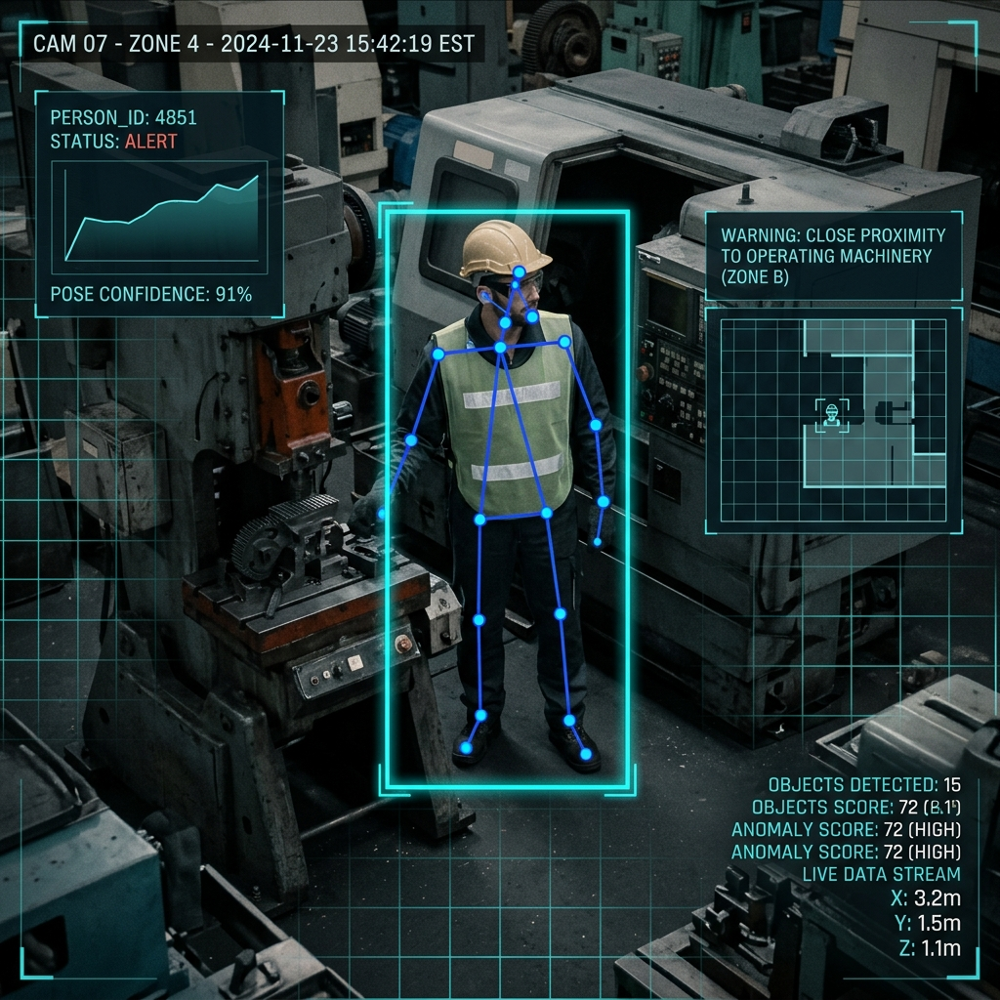
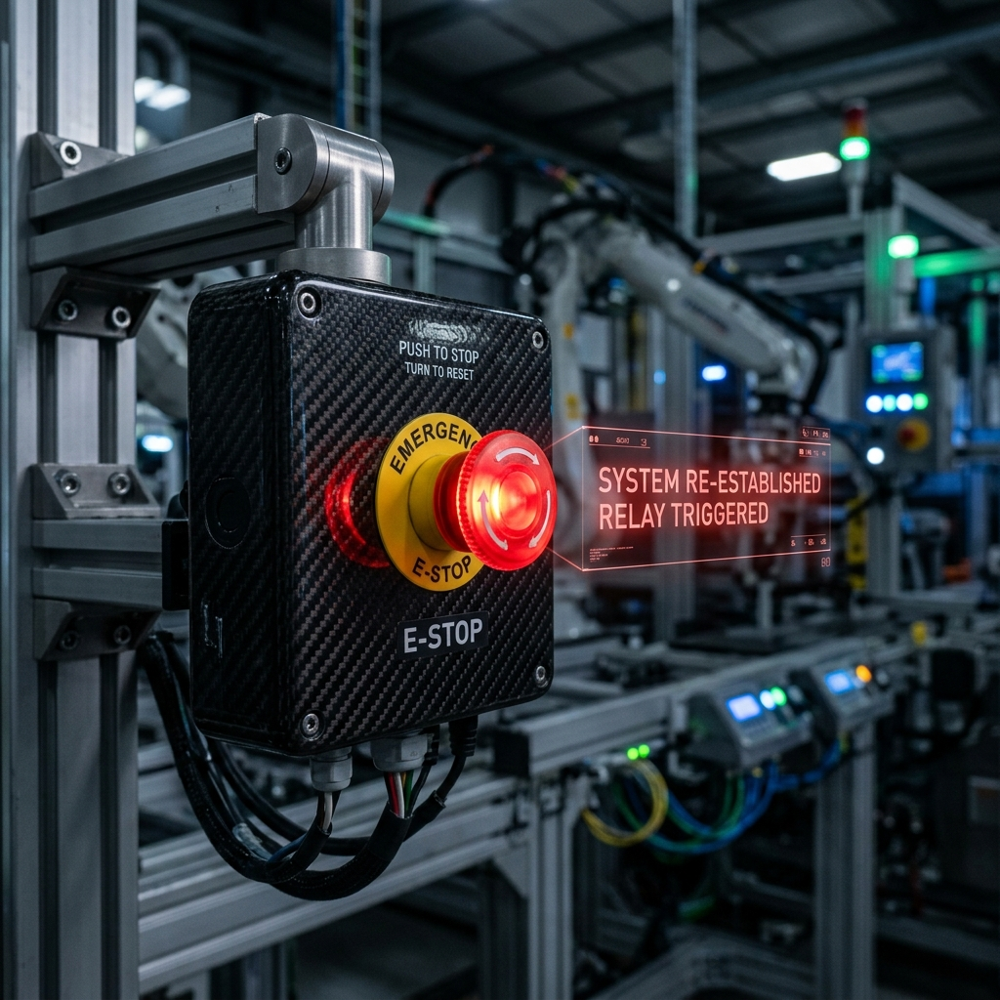

Delve deep into the neural framework protecting high-velocity manufacturing cells. By orchestrating neural human posture networks, real-time spatial triangulation algorithms, and sub-millisecond industrial PLC controllers, we solve traditional physical safeguarding limits completely.
Why traditional physical barricades and mechanical light curtains are failing in modern industries.
Operators frequently override physical microswitches or lean across optical safety curtains to align materials, causing catastrophic accidents when mechanical overrides fail or stay bypassed.
Traditional trip sensors do not calculate speed or posture. They trip immediately at the border, shutting down the cell, which halts overall productivity, or trip too late to stop a high-inertia heavy flywheel.
Legacy setups are blind. They cannot tell if a worker has tripped and is falling dangerously into a press, or if they are simply passing by safely. Human posture context is completely absent.
Active coordinate triangulation classifying the workspace into three adaptive zones.
The worker is at an absolute safe distance. The machine operates at 100% capacity with green ambient status indicators and no signal interruptions.
Worker approaches the active perimeter. Edge processor generates a Modbus/TCP speed-reduction command, reducing machine frequency by 30% and engaging warning strobes.
Critical intrusion detected! Local edge device triggers high-speed safety digital relays. Machinery cuts core motor power instantly in less than 280 milliseconds.
How the neural safety shield processes visual pixels and converts them to magnetic power shutdowns.
Wide-angle industrial cameras with 1080p sensors stream at 60 FPS, providing constant high-definition visual telemetry of active heavy machinery operating cells.
Local neural processor (Nvidia Jetson / Raspberry Pi Edge Core) runs an optimized YOLOv8-pose model, tracking 17 skeletal joint coordinates of multiple operators in real-time.
Safety software algorithms calculate the absolute spatial distance between the defined machine coordinates and the operator's nearest tracking nodes 60 times a second.
In case of warning buffer or hazard breaches, local safety controllers emit immediate digital output relay changes or Modbus/TCP packets directly to active machinery PLCs.
Heavy-duty electric contactors snap open under the command of safety digital outputs, instantly exhausting mechanical kinetic energy and bringing the robot arm to a complete halt before impact occurs.
Contrasting the Smart AI Safety Shield specs with traditional mechanical safeguarding setups.
| Feature Requirement | AI Safety Shield (Next-Gen) | Traditional Systems (Legacy) |
|---|---|---|
| Detection Model / Sensor | YOLOv8 Neural Pose-Estimation | Physical Gates & Optoelectronic Light Curtains |
| Spatial Coordinate Coverage | Continuous 3D Volumetric Area Grid | One-dimensional Linear Bounds (Infrared Beams) |
| Operational Latency | 4.2ms Inference + 15ms Modbus Command | Mechanical contact relay trip delays (300-800ms) |
| Worker Posture Awareness | Full Skeletal Node Tracking (Tripping, Standing, Leaning) | Blind (Triggers on any object width breaking the beam) |
| System Override Protection | Fail-safe software heartbeat & encrypted bypass keys | Easily bypassed by standard electrical jumper wires |
| Maintenance Overhead | Zero mechanical wear. Software edge calibration | High (constant alignment calibration & replacement switches) |
Latest technical solutions deployed in real factories using YOLO tracking and hardware overrides.

Our optimized YOLOv8 neural network tracks 17 core human skeletal joints at 60fps under harsh factory lighting, delivering 99.4% detection confidence.
Volumetric mapping defines concentric green operational zones, yellow caution buffers, and red shutdown bounds directly relative to robotic coordinates.

Double-contact magnetic relays cut motor supply in less than 280ms when the 1.5m hazard perimeter is breached, avoiding flywheel collision.
Step into our live interaction consoles. Test the virtual coordinate sandbox, slider parameters, or launch the master analytics center.